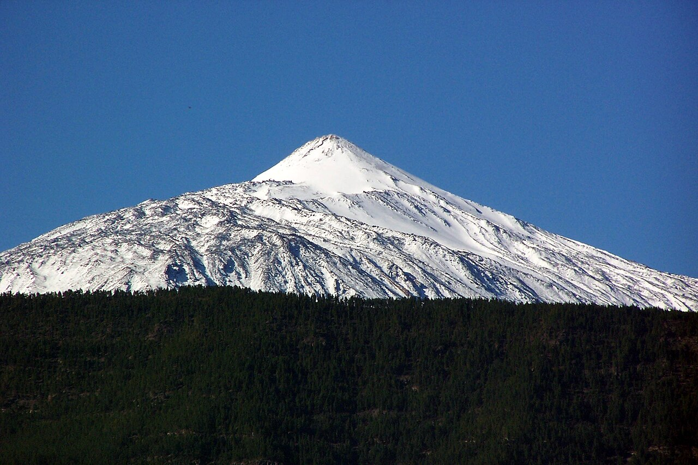

Bienvenidos a Tenerife!
Clima
A Tenerife se la conoce internacionalmente como la Isla de la Eterna Primavera. La atribución de esta denominación climática se produce en gran medida gracias a los vientos alisios, cuya humedad, principalmente, se condensa en las zonas de medianías del norte y nordeste insular, constituyendo amplios mares de nubes que se disponen preferentemente entre los 600 y 1800 metros de altura.
Otro factor que influye en la suavidad del clima de las Islas con respecto al que por latitud correspondería (desierto del Sahara), es la corriente marina fría de Canarias, que enfría la temperatura de las aguas que bañan las costas y playas isleñas con respecto a la ambiental. Por último, la propia orografía tinerfeña también habría que tenerla en cuenta en esta terna de agentes encargados de hacer realidad el anteriormente citado eslogan.
A grandes rasgos, el clima de Tenerife es moderado, templado y muy suave en cualquier estación del año. No hay períodos de frío pero tampoco los hay de calor asfixiante. Las temperaturas medias son de 18 °C en invierno y 25 °C en verano, aunque estos sean valores relativos y generales. Evidentemente se producen importantes contrastes, como el que se produce durante los meses de invierno, en los cuales es posible disfrutar del sol en zonas de costa y, sin embargo, 3000 metros por encima poder contemplar la blanca estampa nevada del Teide, lugar en el que nieva todos los años
Otro ejemplo de contraste climático lo encontraríamos en la ciudad de Santa Cruz con respecto a la ciudad de La Laguna. Municipios unidos físicamente pero distanciados en cuanto a condiciones climáticas. Generalmente Santa Cruz tiene durante todo el año un clima cálido con temperaturas sensiblemente superiores a las que se disfrutan en la aledaña La Laguna, donde frecuentemente hace un poco más de frío y existe mayor probabilidad de precipitaciones, y cuyo clima es similar a las medianías del norte de la península.
El norte y el sur de Tenerife poseen igualmente diferentes características climáticas. En barlovento se registra un 73 % de las precipitaciones totales además, la humedad relativa del aire es superior y la insolación inferior. Los máximos pluviométricos se registran en barlovento a una altitud media entre 1000-1200 m, casi exclusivamente en los montes de La Orotava.
Pero quizás sea más significativo que todo el norte insular carezca de un espacio en el que la pluviosidad media sea inferior a los 250 mm anuales. En cambio, en la vertiente sur de la isla los valores pluviales son significativamente menores. Los únicos reductos sureños que se salvan de esta situación son Masca y Güímar, probablemente debido a sus características físicas que posibilitan una mayor presencia del alisio.
A continuación se muestra una tabla con algunos datos climáticos de la isla:
| Datos climaticos | Enero | Febrero | Marzo | Abril | Mayo | Junio | Julio | Agosto | Septiembre | Octubre | Noviembre | Diciembre |
|---|---|---|---|---|---|---|---|---|---|---|---|---|
| Temperatura media (°C) | 17.1 | 17.3 | 18.1 | 19.4 | 20.6 | 22.3 | 23.5 | 24.1 | 23.6 | 22.1 | 20.1 | 18.2 |
| Precipitación media (mm) | 42.3 | 38.1 | 28.4 | 15.2 | 6.1 | 2.3 | 1.2 | 3.4 | 12.5 | 28.7 | 45.6 | 55.4 |
| Horas de sol diarias | 5,9 | 6,6 | 7,1 | 7,7 | 8,8 | 9,8 | 10,6 | 9,8 | 8,5 | 6,9 | 5,9 | 5,5 |
| Días de lluvia(mes) | 5 | 5 | 5 | 3 | 1 | 0 | 0 | 1 | 1 | 3 | 5 | 6 |
| Humedad relativa (%) | 76 | 75 | 74 | 73 | 72 | 70 | 69 | 70 | 72 | 74 | 75 | 76 |
| Temperatura del agua (°C) | 19 | 18 | 18 | 18 | 19 | 20 | 22 | 23 | 23 | 22 | 21 | 20 |